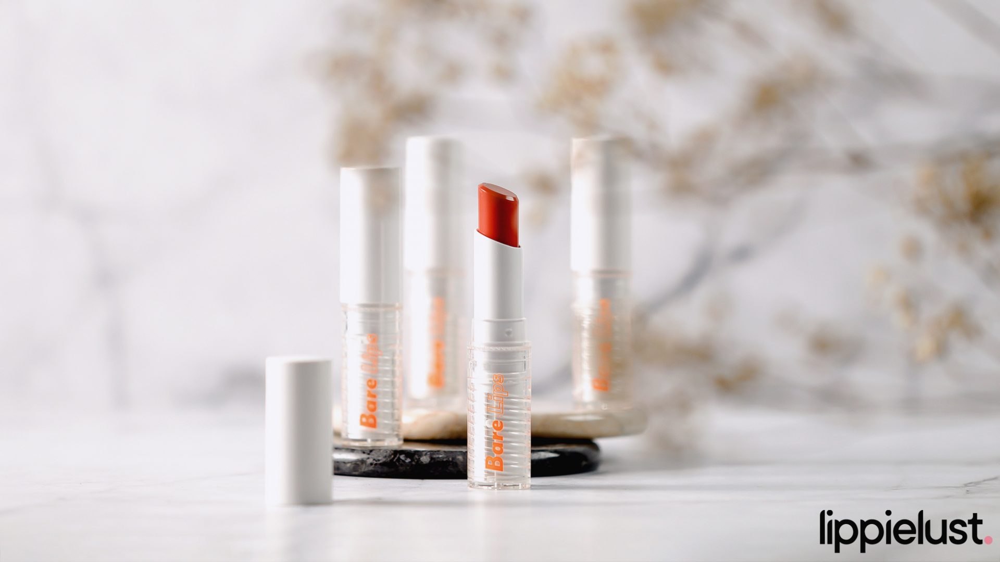
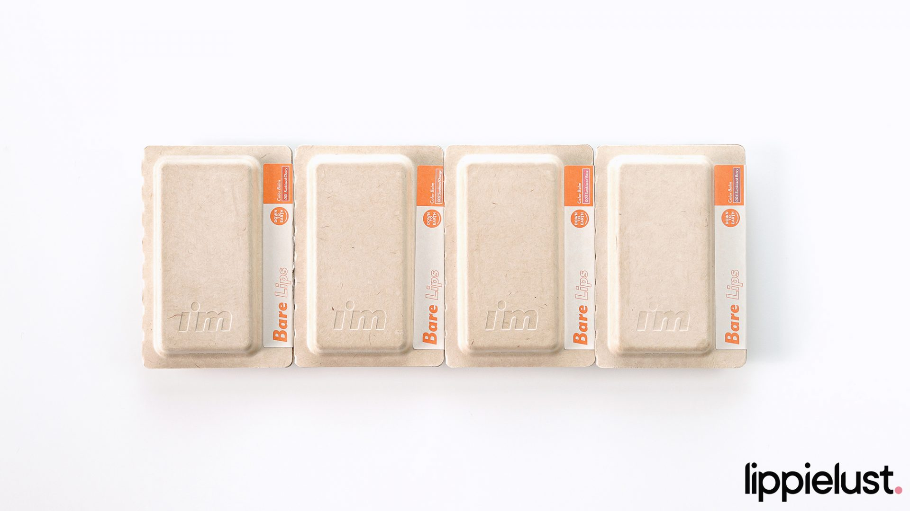

[Swatches + Review] I’m Meme Matte To Go & Bare Lips Color Balm
I’M MEME Bare Lips Color Balm

Nama Produk: I’M MEME Bare Lips Color Balm
Produsen / Distributor: MBX Corp
Berat Bersih: 3.2 gr
Jumlah Warna: 4 warna
Harga: Rp180.000
Pembelian: Official I’M MEME Stores at Shopee, Tokopedia
Claims
I’m Meme – I’m Bare Lips Color Balm adalah lip balm berwarna yang dapat menambah rona pada bibir. Memiliki 4 warna cerah, lip balm ini mengandung BareVita D Complex (Provitamin D, ekstrak almond, orange, dan cranberry) untuk kelembaban bibir. Tidak hanya itu, produk ini diperkaya shea butter dan orange peel oil yang menutrisi untuk memberikan hidrasi dan perlindungan tahan lama pada bibir.
Berbeda dari I’M Meme Bare Lips yang udah pernah aku review di Instagram sebelumnya, I’M Meme Bare Lips Color Balm ini memiliki hero ingredients tambahan yang memiliki benefit lebih baik, yaitu BareVita D dan orange peel oil yang bisa menghidrasi dan melindungi bibir dalam jangka panjang.
Feel-nya gak berbeda jauh dari the classic Bare Lips: produk sheer tinted balm ini memiliki tampilan glossy dan buildable— warnanya bisa benar-benar terlihat jelas dalam beberapa kali swipe, tanpa menutupi warna bibir asli kita.
Yang membedakan adalah warna-warnanya. Jika Bare Lips memiliki warna-warna yang bernuansa pink, Bare Lips Color Balm memiliki dua tone warna yang soft, yaitu orange dan pink. Bare Lips 02 Nutty adalah warna yang paling aku favoritkan dan Bare Lips Color Balm 003 Sunkissed Rose adalah warna dari seri Color balm yang aku suka!
Shades
#001 Sunkissed Cherry (cherry color that’s warm like sunshine)
#002 Sunkissed Orange (natural orange color under the sunlight)
#003 Sunkissed Rose (pinkish rose grown in full sunlight)
#004 Sunkissed Berry (berry color that looks as calm as sun-dried berries)
Packaging

Ada yang unik jika kita berbicara soal packaging dari I’m Meme Bare Lips Color Balm. Environmental friendly, box Bare Lips Color Balm terbuat dari recycled paper yang disesuaikan dengan bentuk dan ukuran lip balm ini. Desain botol sangat simple, berwarna putih di bagian atas dan transparan di bagian bawah. Setiap sisinya terdapat dengan tulisan “I’m” dan “Bare Lips” berwarna oranye.
Ingredients
Caprylic/Capric Triglyceride, Diisostearyl Malate, Hydrogenated Polydecene, Ceresin, Hydrogenated Polyisobutene, C12-15 Alkyl Benzoate, Bis-Diglyceryl Polyacyladipate-2, Polyglyceryl-2 Triisostearate, Ditrimethylolpropane Isostearate/Sebacate, Octyldodecanol, Phytosteryl/Isostearyl/Cetyl/Stearyl/Behenyl Dimer Dilinoleate, Isoeicosane, Polyethylene, Dimer Dilinoleyl Dimer Dilinoleate, Synthetic Wax, Silica Dimethyl Silylate, Ethylene/Propylene Copolymer, Titanium Dioxide (CI 77891), Iron Oxides (CI 77491), Iron Oxides (CI 77492), Tocopheryl Acetate, Citrus Aurantium Bergamia (Bergamot) Fruit Oil, Caprylyl Glycol, Glyceryl Caprylate, Eucalyptus Globulus Leaf Oil, Water, Butyrospermum Parkii (Shea) Butter, Citrus Aurantium Dulcis (Orange) Peel Oil, Theobroma Grandiflorum Seed Butter, Glycerin, Butylene Glycol, Prunus Amygdalus Dulcis (Sweet Almond) Seed Extract, Methyl Cyclodextrin, 1,2-Hexanediol, Citrus Aurantium Dulcis (Orange) Fruit Extract, Vaccinium Macrocarpon (Cranberry) Fruit Extract, 7-Dehydrocholesterol, Tocopherol, Polyglyceryl-2 Diisostearate, Yellow 5 Lake (CI 19140), Red 27 (CI 45410:1), Red 28 Lake (CI 45410), Yellow 6 Lake (CI 15985), Iron Oxides (CI 77499), Red 6 (CI 15850), Red 7 Lake (CI 15850:1)